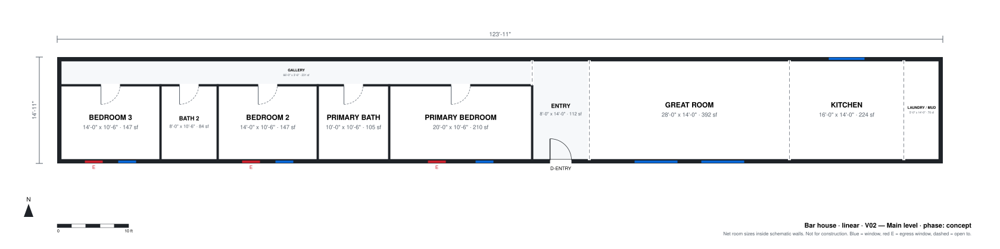
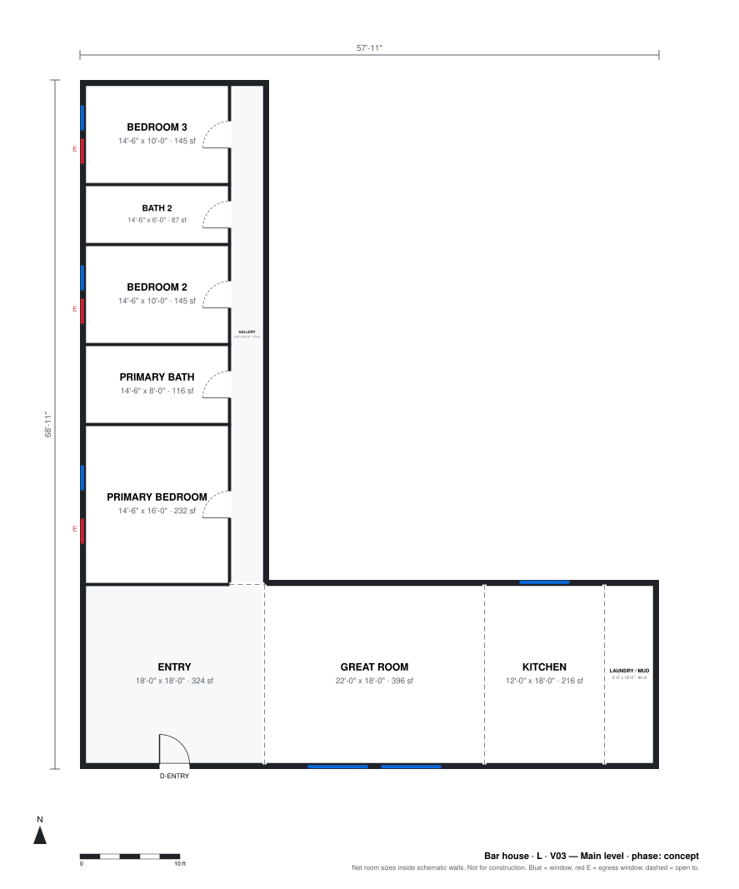
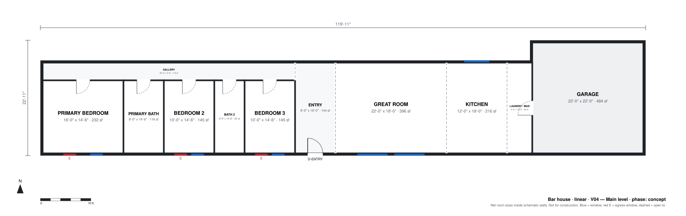
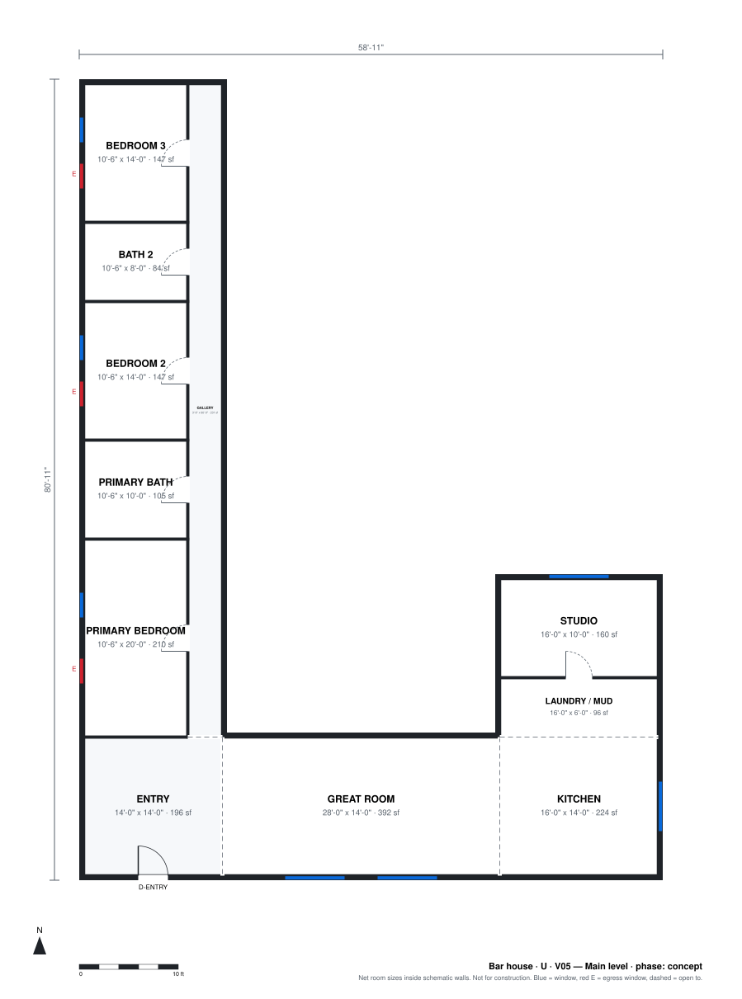
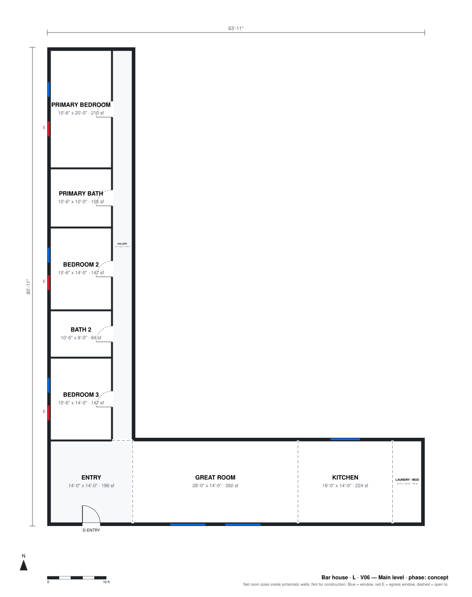

parti=U, living_depth_ft=16, sleeping_depth_ft=16, primary=far, garage=none
aspect 1.33 · compactness 0.51 · shape_factor 6.38 · south_glazing 0.41 · circulation 0.23 · outdoor 0.00 · levels 1.00
warnings: none

parti=linear, living_depth_ft=14, sleeping_depth_ft=14, primary=far, garage=none
aspect 8.79 · compactness 1.00 · shape_factor 6.60 · south_glazing 0.90 · circulation 0.20 · outdoor 0.00 · levels 1.00
warnings: none

parti=linear, living_depth_ft=14, sleeping_depth_ft=14, primary=far, garage=attached
aspect 6.59 · compactness 0.69 · shape_factor 7.11 · south_glazing 0.90 · circulation 0.20 · outdoor 0.00 · levels 1.00
warnings: none

parti=L, living_depth_ft=14, sleeping_depth_ft=14, primary=far, garage=attached
aspect 1.06 · compactness 0.34 · shape_factor 7.23 · south_glazing 0.48 · circulation 0.24 · outdoor 0.00 · levels 1.00
warnings: none

parti=linear, living_depth_ft=18, sleeping_depth_ft=18, primary=far, garage=attached
aspect 5.41 · compactness 0.85 · shape_factor 5.97 · south_glazing 0.90 · circulation 0.18 · outdoor 0.00 · levels 1.00
warnings: none

parti=U, living_depth_ft=18, sleeping_depth_ft=14, primary=far, garage=attached
aspect 1.45 · compactness 0.48 · shape_factor 7.02 · south_glazing 0.48 · circulation 0.26 · outdoor 0.00 · levels 1.00
warnings: none